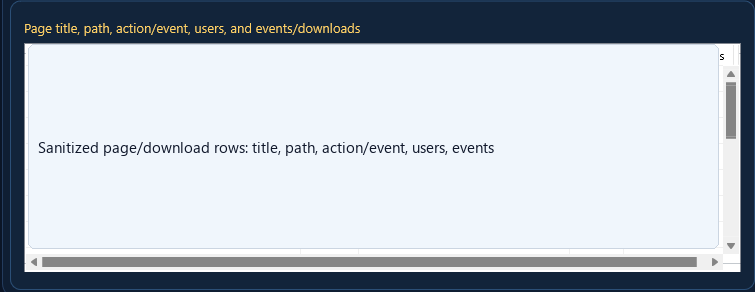

Pages, Downloads, and Actions

The pages/downloads area shows what visitors used during the selected date range.
- Page title and path identify the content.
- Action/Event distinguishes page views, downloads, scrolls, clicks, and engagement events.
- Download counts depend on GA4 receiving download events from the website.